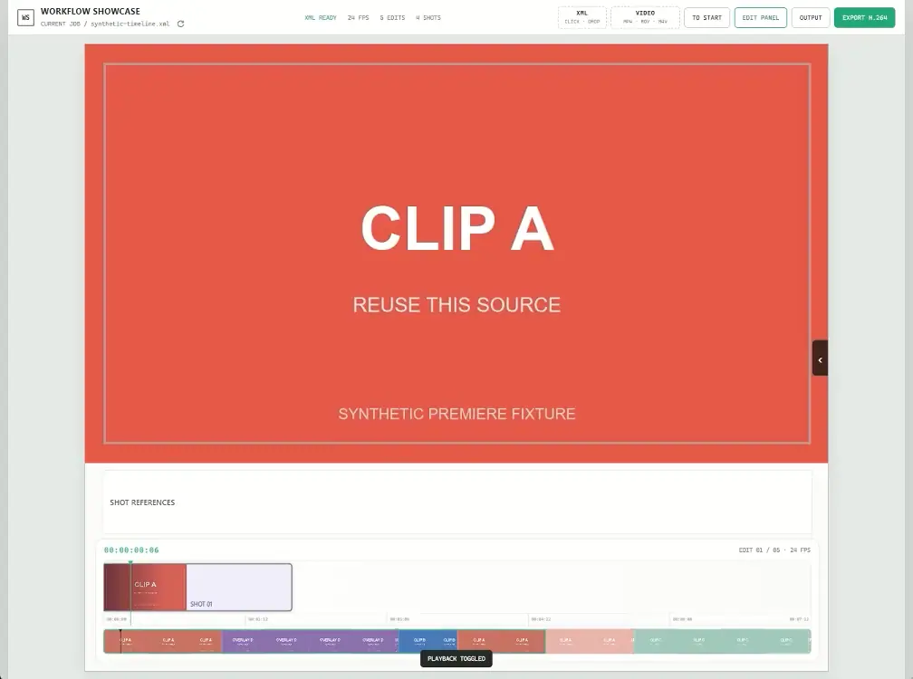
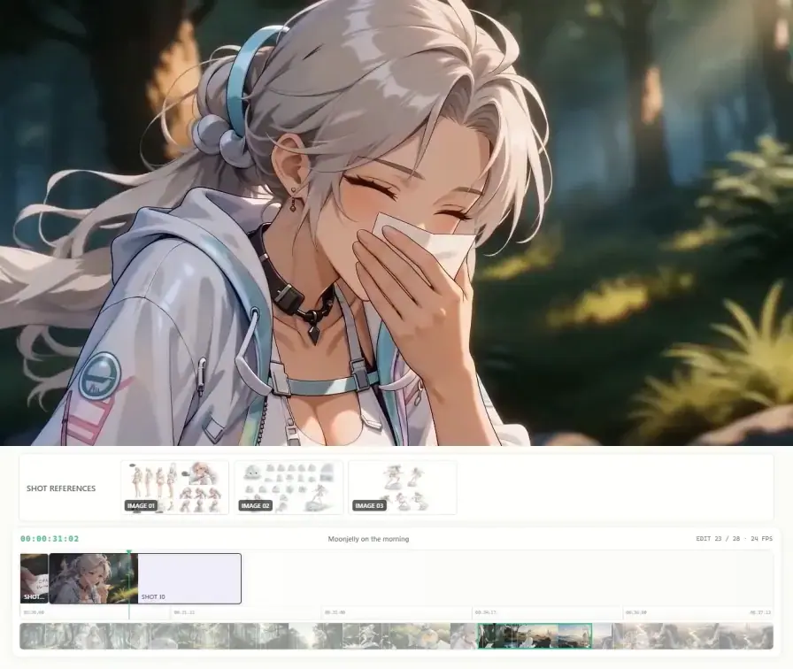
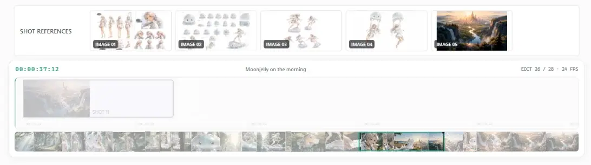
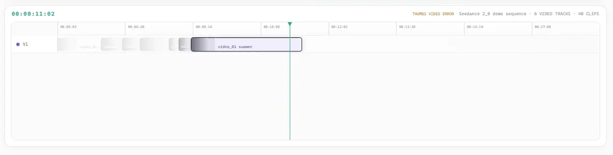

Seedance 2.0 같은 AI 생성 도구로 영상을 만드는 사람들이 제작에 사용한 레퍼런스와 프리미어에서 뽑은
XML 데이터를 기반으로, 최종 렌더링된 영상 밑에
간단한 워크플로우를 손쉽게 얹어주는 템플릿 앱입니다.

소셜에 영상 밑에 캐릭터 시트나 스토리보드 등을 얹어서 올리는 방식을 바리에이션한,
자기가 작업한 데이터를 뽑아 템플릿으로 사용하는 도구입니다.

개발된 기능이 없다시피 한 초간단 앱입니다. 예쁜 건 전부 여러분이 직접 만들어야 합니다.
대신 만들기 좋게 — 정확히는 에이전트가 수정하기 좋게 구조를 잘 분해해 놨습니다.
틀만 가져가서 토큰 아끼고, 빠르게 커스텀할 수 있는 게 진정한 FEATURES입니다.
기본값은 활성 클립 중 최상단의 클립만 보입니다. 본인이 이 클립을 몇 번 썰었는지, 프롬프트 가챠를 몇 번 했는지 최대한 알립니다.
사람이 직접 보고 조립해야 합니다. 대신 GLOBAL BASE 전역 세팅, 샷별 ADD / REPLACE / HIDE, LEAD-IN과 전체 적용 3D POP 옵션까지 편의성을 챙겼습니다.
기본 3종은 뼈대만 잡아둔 샘플입니다. 더 예쁘게 꾸며서 활용하세요.
현재 기본 출력은 60fps입니다. 24fps 원본 영상도 workflow의 인터랙션을 부드럽게 보여주기 위해 60fps로 출력합니다.
원본 클립을 제외한 커스텀 레이어(Adjustment Layer)는 반영되지 않습니다. FX 레인은 기본 제공하지 않으며, 추가하려면 입력 어댑터와 UI를 별도로 구현해야 합니다.
구조를 에이전트가 추적하기 쉽게 분해·문서화해뒀습니다. 코덱스/클로드한테 "이렇게 바꿔줘" 한마디면 됩니다.
에이전트한테 이쁘게 만들어 달라고 하거나, 본인만의 워터마크 스타일로 변경하세요.
레퍼런스가 쓰인 장면이 너무 짧아 묻힐 때, LEAD-IN을 켜면 1초 전부터
인접 샷에 미리 붙여줍니다. "제발 봐줘!!" 하는 구간을 지키는 용도입니다.


기본 상태로 바로 사용할 수 있고, 거기서 멈출 필요도 없습니다. 레이아웃·콜아웃·화면 비율·레퍼런스 배치까지 자기 작업 방식과 취향에 맞게 자유롭게 바꿔보세요.
Codex·Claude 같은 AI 에이전트가 필요한 부분을 빠르게 찾아 수정할 수 있도록 코드 구조와 전용 커스터마이징 가이드를 준비했습니다. 이 저장소를 자신만의 Workflow Showcase로 만들어 쓰세요.
https://github.com/ch5p/workflow-showcase
위 주소 복붙해서 에이전트(Codex·Claude)한테 실행해달라고 하세요.
Windows 10/11 · Node.js 22.12+ · NVIDIA GPU 권장(없으면 CPU 폴백)
Windows 11 · Adobe Premiere 2026 (26.2.2 Build 3)의 Final Cut Pro XML export로 검증했습니다.
macOS 앱 실행은 검증하지 않았습니다. 최신 Final Cut Pro XML(.fcpxml)은 현재 미지원이며 별도의 입력 어댑터가 필요합니다.
공식 타임라인 XML 내보내기 기능을 제공하지 않아 지원하지 않습니다.